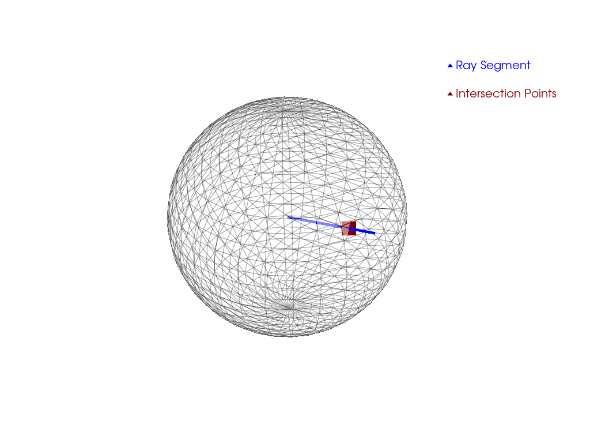

Note
Go to the end to download the full example code. or to run this example in your browser via JupyterLite or Binder
Ray Tracing#
Single line segment ray tracing for PolyData objects.
import pyvista as pv
# Create source to ray trace
sphere = pv.Sphere(radius=0.85)
# Define line segment
start = [0, 0, 0]
stop = [0.25, 1, 0.5]
# Perform ray trace
points, ind = sphere.ray_trace(start, stop)
# Create geometry to represent ray trace
ray = pv.Line(start, stop)
intersection = pv.PolyData(points)
# Render the result
p = pv.Plotter()
p.add_mesh(
sphere, show_edges=True, opacity=0.5, color="w", lighting=False, label="Test Mesh"
)
p.add_mesh(ray, color="blue", line_width=5, label="Ray Segment")
p.add_mesh(intersection, color="maroon", point_size=25, label="Intersection Points")
p.add_legend()
p.show()
Total running time of the script: (0 minutes 0.751 seconds)
Estimated memory usage: 193 MB